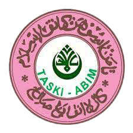
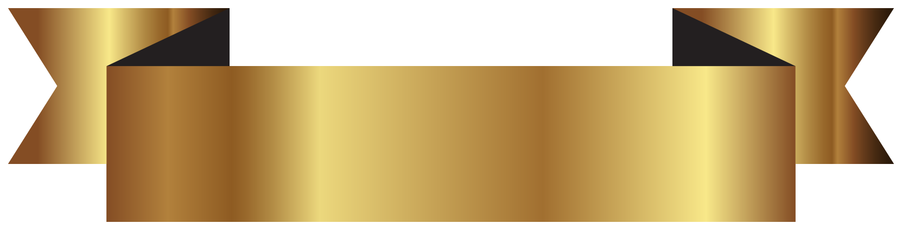
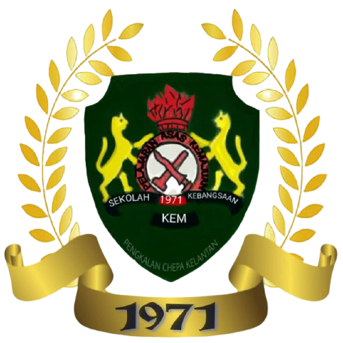
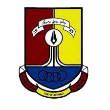
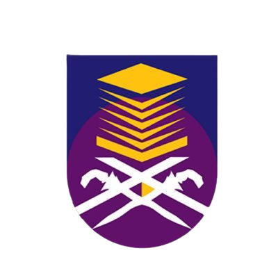

These images and australia map in bucket list page are using image map.
 Taski As-Solihin
Sek. Keb. Kem
SMK Dato' Ahmad Maher
Universiti Teknologi Mara
I started my first formal education at Taski As-Solihin in 2005 and graduated from that kindergarten at 2006. After that, I went into Sekolah Kebangsaan Kem from 2007 until 2012 for my UPSR. Next, I entered Sekolah Menengah Kebangsaan Dato' Ahmad Maher from 2013 until 2017, taking my PT3 and SPM at there. Currently, I'm furthering my study in Diploma of Information Management at Universiti Teknologi Mara Cawangan Kelantan that located in Machang.